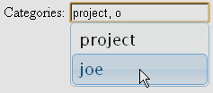

{@link com.databasesandlife.util.wicket.MultipleValueAutoSuggestTextField} allows the user to enter multiple values, and suggestions are proposed by the system. The user may enter values which are not amongst the suggestions.

{@link com.databasesandlife.util.wicket.MultipleValueAutoCompleteTextField} also allows the user to enter multiple values. The values the user enters must be amongst the suggestions: the user may not enter any other values.
{@link com.databasesandlife.util.wicket.CountingUpThenAutoRefreshingLabel} counts up, tending towards a particular value, and then starts to auto-refresh this value, at ever decreasing intervals. Useful for counters on startpages indicating number of active users, or similar.
{@link com.databasesandlife.util.wicket.GoogleAnalyticsAsyncWidget} includes the Google Analytics tracking code.
{@link com.databasesandlife.util.wicket.DisappearingFeedbackPanel} is the same as a normal FeedbackPanel but the whole component is deleted from the markup in case there are no messages to display.